Nina's Cleaning App
A phone-first app for a small cleaning business. It turns a quote into a paid booking hold, so fewer booked jobs cancel.
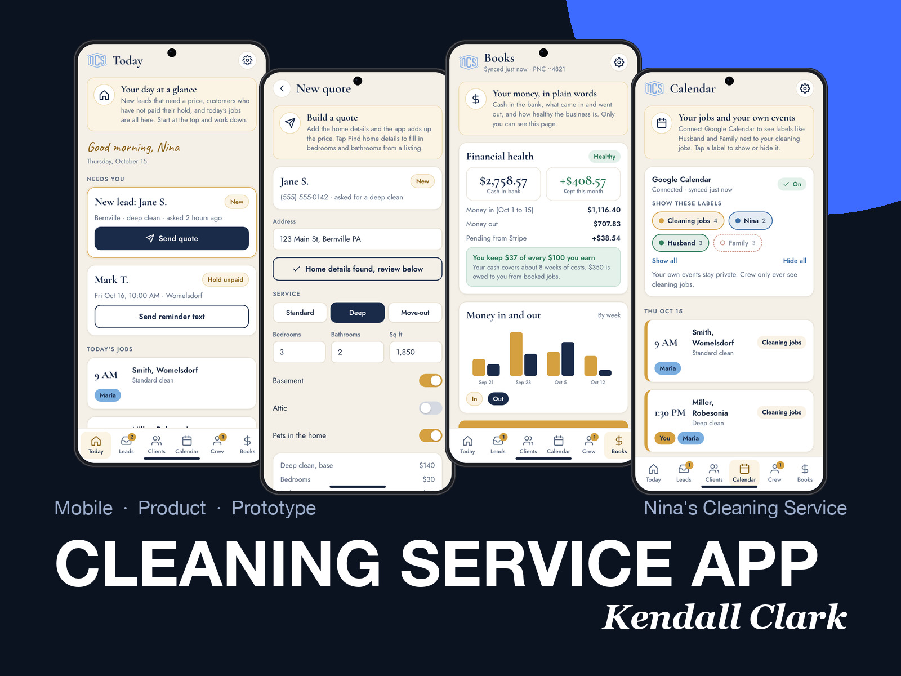
Overview
Nina cleans homes in Berks County. Her work comes by word of mouth, and about half of her projected income was disappearing when booked clients canceled. She had never charged a deposit, tracked a lead, or kept a client list.
I ran the design from first conversation to a clickable prototype: research, problem framing, 13 low-fidelity screens in Figma, a design system, and a working prototype with three views (Nina, her customer, and her crew). The core idea is a small booking hold that the customer pays when they agree to the quote, credited to the final bill.
This is a prototype. Nina has not used it with real customers yet, so this page does not claim results. It does show the thinking and the decisions.
The problem
Nina told me she loses roughly half of her projected income to cancellations. When I asked about the details, the picture was specific:
- Cancellations come from new leads and one-time clients. Her regulars do not cancel.
- She has never charged a deposit or a cancellation fee, so a booking costs the customer nothing to drop.
- She prices each home by searching the address herself: bedrooms, bathrooms, and the home's value, then a visit to look at it.
- Her leads live nowhere. She does not track them, so follow-up is by memory.
- She confirms times by text, with no written terms.
- Her crew is one or two people besides her, coordinated by text. She uses an Android phone.
She was worried that a fee would scare customers away. That worry shaped almost every decision that followed.
Process
I worked in the double diamond: explore widely, narrow to a problem, explore solutions, then narrow to something buildable. I am currently at the start of the last stage.
Discover
Talked with Nina about how a job runs today. Read her website form data and her current texts.
Define
Wrote the problem as questions, set the cancel policy, and mapped who sees what.
Develop
Figma wireframes, a design system, then a clickable prototype Nina can hold on her own phone.
Deliver
Usability test with Nina, a scoped first release, then a 30 day pilot against her baseline.
Discover
I started with Nina's real process. The most useful findings were small and practical.
The people who cancel are strangers. New leads and one-time clients. The fix has to work on someone who has no relationship with Nina yet.
A quote costs the customer nothing. There is no step where they commit.
Pricing is a manual lookup. She searches the address, checks beds, baths, and value, then decides by feel. That is slow and hard to repeat.
Leads have no home. Her website form had collected 8 requests in two months, and nothing else tracked who asked.
She works from her phone. Texting is her main tool. A desktop dashboard would not fit her day.
Her crew coordinates by text. Time off, schedules, and hours all go through her.
Define
I turned the findings into four questions to design against:
- How might we secure a first-time customer's commitment without making them feel distrusted?
- How might we put every lead in one place so none gets lost?
- How might we give Nina a price in minutes from an address?
- How might we let her crew see their schedule and hours without texting Nina each one?
The cancel policy is a design decision
The words and rules matter as much as the screens. I drafted options, then Nina chose. She wanted a fee that would not scare people away, so I looked for language that reads as reserving a spot instead of punishing a customer.
| Rule | What it says | Why |
|---|---|---|
| Name | "Booking hold," credited to the final bill | Reads as reserving a spot. I also considered "spot guarantee," "reservation credit," and "schedule commitment." |
| When | Paid when the customer agrees to the quote | The customer has money in the job right away, and Nina can treat the booking as real. |
| Free changes | Free to change or cancel until 40 hours before | A fair way out. Shown as a clock time, like "Wed 6:00 PM," so nobody has to count hours. |
| Reschedule | One free reschedule per client | Most people want to move the date, not cancel. This keeps the job on the calendar. |
| Late change | Hold is kept, waived once for a first-time issue | Protects her income without punishing a first mistake. |
| Estimate visit | Stays free | She visits homes before pricing, so the hold belongs to the booking, not the visit. |
From today to the new way
| Step | Today | With the app |
|---|---|---|
| Lead arrives | A text or a form. It lives nowhere. | One Leads list with a status for each person. |
| Price | Searches the address by hand. | Paste the listing text and the app fills in beds, baths, and size. Her own price rules add it up. |
| Commit | She texts a time. Nothing binds the customer. | The customer picks a time, agrees to the terms, and pays the hold in one link. |
| Remind | Manual texts. | Reminders two days before and the morning of. |
| Cancel | Free and silent. | The Change or cancel sheet shows what will happen before the customer taps. |
| Get paid | After the clean. | Hold now, balance after, paid out to her business bank account. |
Three people, three views
The app has three kinds of user, and each one sees a different slice. Getting this wrong would have been the worst mistake in the project, so I made the rules explicit before drawing screens.
| Nina | Customer | Crew | |
|---|---|---|---|
| People | All leads and clients | Only themselves | Name and town for jobs they are on |
| Prices and holds | Everything | Their own quote and hold | Never |
| Phone numbers | All | Their own | Never. They ask Nina. |
| Books and bank | Only Nina, behind her fingerprint | Never | Never |
| Calendar | Jobs plus her own Google events, by label | Their booking | Jobs and who is working, never her personal events |
| Settings | Hold, rules, prices, texts | None | Their own reminders |
"Crew never see prices or customer phone numbers" became a hard rule. In the prototype it is enforced by how the crew screens get their data, not by hiding buttons, and I check it with a test that scans every crew screen for a dollar amount or a phone number. In the real build it has to be enforced in the database.
Wireframes in Figma
I drew 13 low-fidelity screens in Figma in three flows: Nina's Today screen and payout setup, a lead going all the way to a paid booking, and the crew. Gray boxes, one yellow highlight, a handwritten typeface, and no brand colors, so people react to structure and not to taste. Each frame has a short note on why it exists.
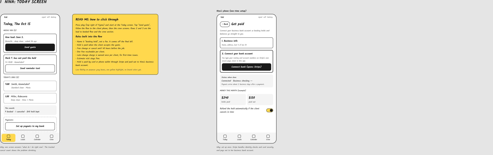
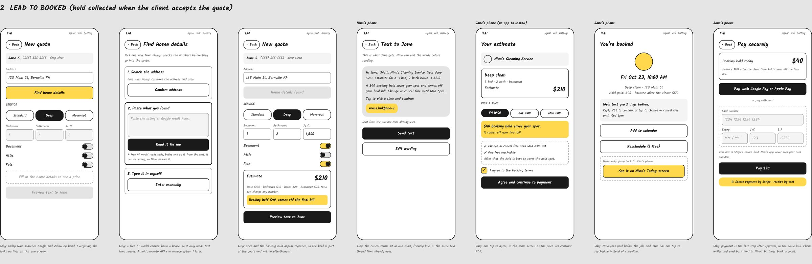
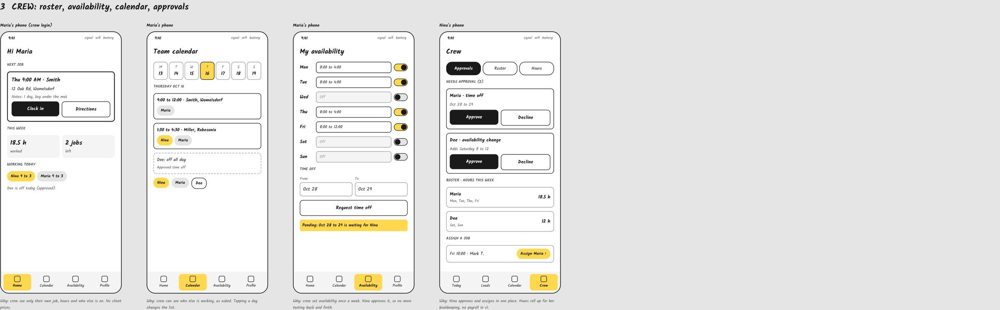
The wireframes caught problems early. I mislabeled a weekday and a cancel cutoff time, and both were fixed in the Figma file before they reached the prototype.
Design system
Nina already has a brand: navy, gold, cream, and a logo blue, with Cormorant Garamond headings and Jost body text on her website. I pulled those tokens into a small Figma system so the app reads as the same business.
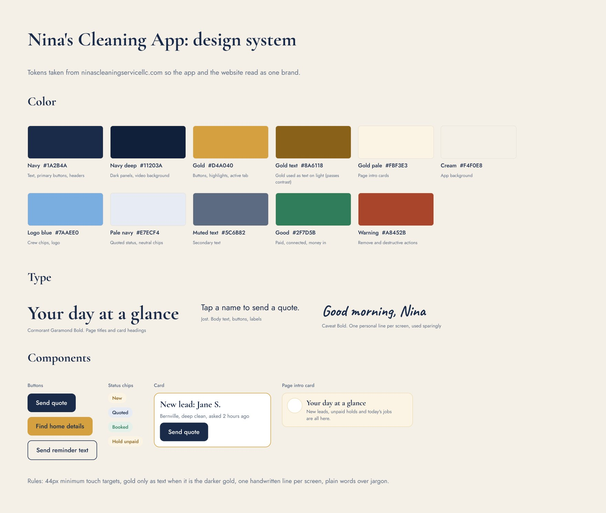
- Gold needed two versions. The bright gold fails contrast as text on cream, so I added a darker gold for text and kept the bright one for buttons and highlights.
- One handwritten line per screen. The script face appears once, for the greeting. Used everywhere it would tire her out.
- Status uses color and words together. New, Quoted, Booked, and Hold unpaid are labeled, so color is never the only signal.
- Touch targets stay at 44 pixels or more. She taps between jobs, often with one hand.
From wireframe to final
The wireframe fixed the structure. The final version kept it and changed the details that mattered once it was a real screen.
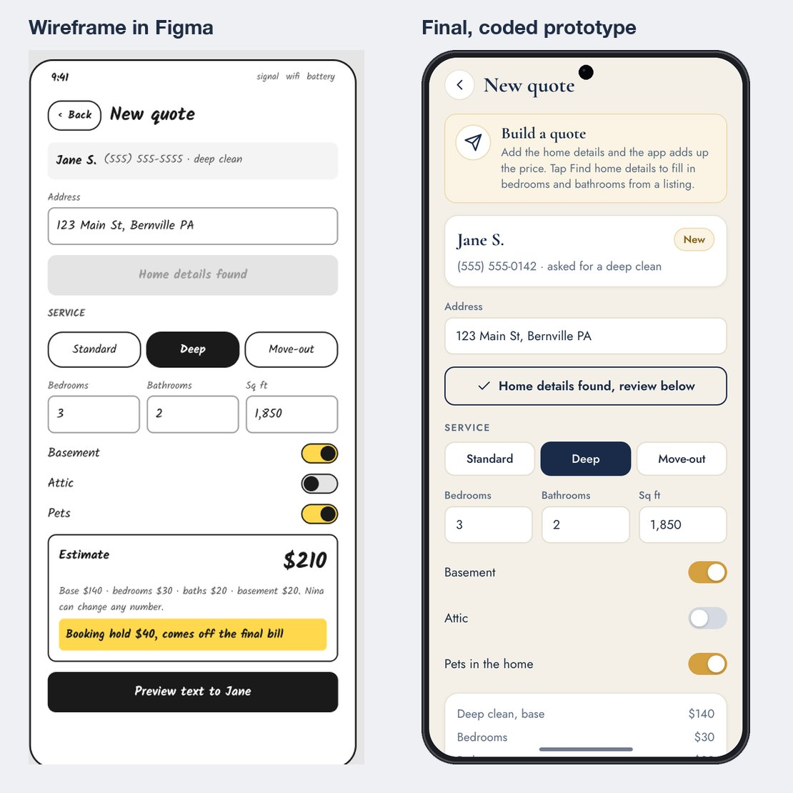
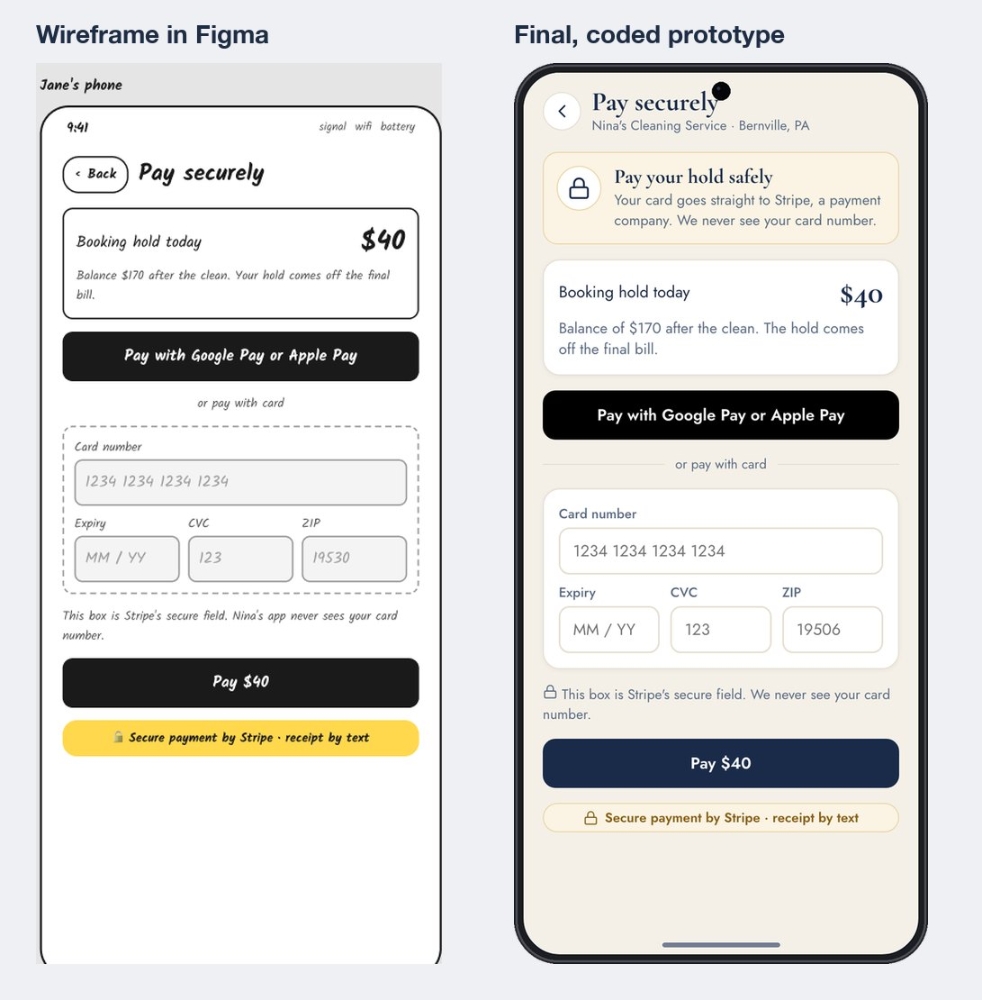
Key screens
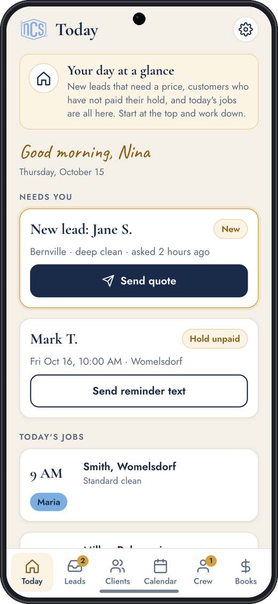
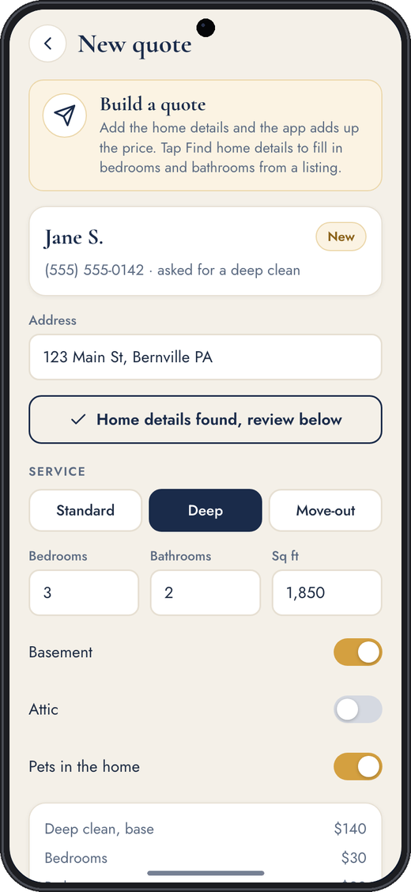
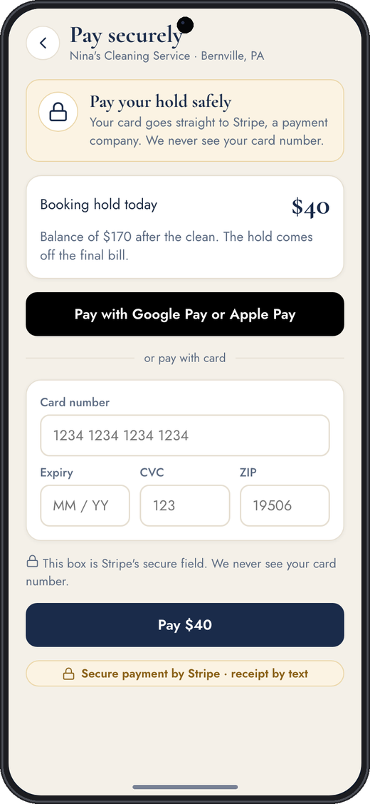
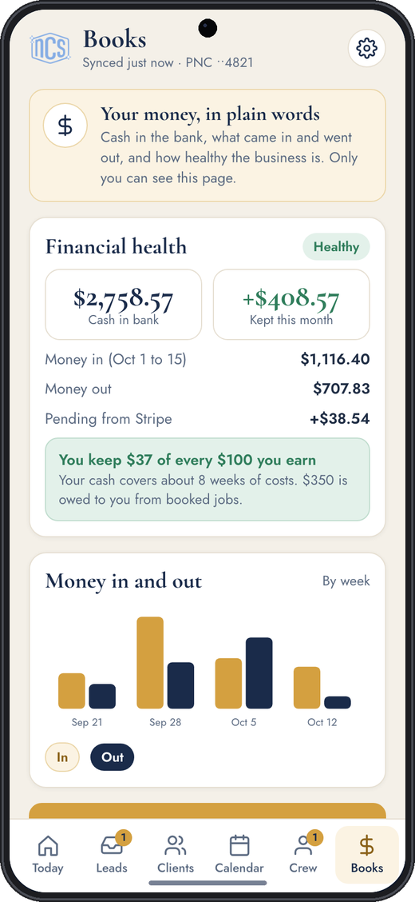
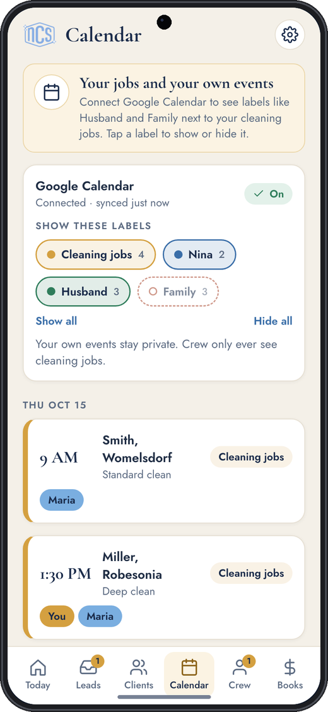
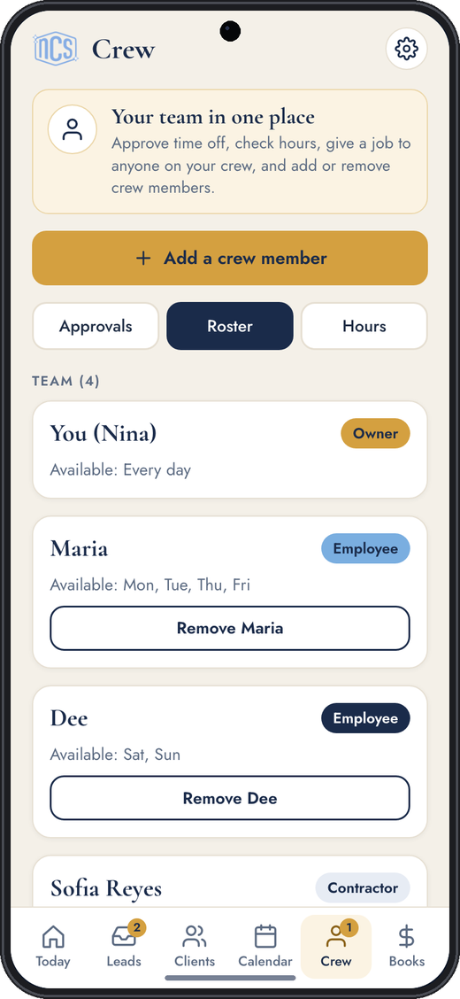
Decisions that mattered
- The hold is collected at the quote, not after a visit. The commitment happens while the customer is still interested.
- Nina never types bank details into the app. She connects her bank on the bank's own page and the app gets read-only access. Books asks for her fingerprint every time.
- The cancel outcome is shown before the tap. The Change or cancel sheet tells the customer whether it is free, waived, or kept, so there is no surprise charge.
- Leads and clients are separate lists. A lead becomes a client when they pay the hold, so Nina can see at a glance who is committed.
- Every page opens with an icon and two plain sentences. Nina is new to apps, so each screen says what it is for.
- The property lookup only reads what Nina pastes. A free AI model cannot know a house, so it reads beds, baths, and size from listing text and Nina checks the numbers. A paid property data service can replace it later.
What changed after feedback
- Android. Nina uses an Android phone, so I redrew the device frames, swapped Face ID for fingerprint, and added Google Pay.
- Google Calendar labels. Her calendar mixes her events with her family's. I added a label filter with a switch per label, plus a warning when a cleaning job overlaps one of her own events. Her personal events never reach the crew.
- Crew management. Add and remove crew, with a confirmation before anyone loses access.
- Words. Screens that talk to Nina now say "you," and the customer screens speak as the business.
Accessibility and content
- Text contrast was checked against the cream background, and gold text uses the darker gold.
- Buttons and tabs are at least 44 pixels tall, and tabs always carry a label under the icon.
- Status is never color alone. Every chip has a word.
- Copy is written at a plain reading level with no jargon. "Booking hold" and "Find home details" replaced terms like "deposit" and "property lookup."
- Motion in the guide respects the reduced-motion setting.
I have not run a formal accessibility audit or tested with assistive technology yet. That belongs in the build phase.
The prototype and walkthrough
The clickable prototype runs in a phone browser and installs to the home screen on Android. A guide panel walks through each task with a "show me where" button, and a switcher lets Nina see her own phone, a customer's phone, and a crew member's phone. I also made a four minute walkthrough video, built with Remotion from the same prototype code, so the video cannot drift from the app.
Testing and what comes next
What I have checked: the pricing math, the cancel rules in every case, that crew screens never show a price or phone number, that Books is locked until unlocked, that removing a crew member removes their access, and that the calendar filter hides what it should. These are scripted checks against the prototype.
What I have not done: a usability test with Nina. That is the first step of Deliver.
Deliver plan
| Step | What happens |
|---|---|
| Test | 30 minutes on her Android with seven tasks. I watch and help only if she is stuck. Pass mark: five of seven unaided. |
| Scope | Must have: leads, quotes, the hold, cancel rules, reminders. Should have: calendar and crew. Could have: Books and invoices. |
| Build | Four phases, starting with the part that stops cancellations. Planned stack: a web app, Supabase for data and logins, Stripe for payments, Twilio for texts, Google Calendar and Plaid for the later phases. |
| Pilot | 30 days on real leads, measured against her baseline cancellation rate from her last 20 bookings. |
Outcome
There is no outcome to report yet. The prototype is live, Nina can use it on her phone, and the next step is the test. I will add the cancellation rate before and after the pilot here once it exists.
What I learned
- Policy is design. The wording of the hold and the clock-time cutoff did more for trust than any visual choice.
- Write the access rules first. Deciding who sees what before drawing screens kept the crew and Books screens honest.
- A prototype on her own phone beats a deck. Putting it in Nina's hands turned vague opinions into specific ones, like her Google Calendar labels.
Tools, stack, and skills
- Design
- Figma (wireframes, design system), Remotion (walkthrough video)
- Prototype
- HTML, CSS, JavaScript, Netlify, installable on Android
- Planned build
- Supabase, Stripe, Twilio, Google Calendar API, Plaid
- Skills
- Mobile UX, user research, information architecture, content design, design systems, prototyping, role-based access design, accessibility